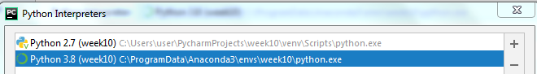

תפתחי את ה-cmd בתור מנהל ותריצי את הפקודה:
python -m ensurepip
תגידי מה קורה אחרי זה

כשהתקנת את python 3.8.5 איפשרת לו להתקין את pip?
הייתי אומר לך להתקין אותו מחדש ולאפשר גם את ההוספה של PYTHON ל-PATH:

אעשה את זה… ואחרי שאתקין מחדש מה אמור לצאת לי שאני מריצה
ובמידה והpip עובד אז דרכו להתקין את המודול?
זה יאמר לך שכבר קיים pip.
אם pip יעבוד לך אז זהו בגדול
מצטרף לבעיות, אני ממש לא מצליח להבין איך אמורים לעבוד עם המודול הזה.
כשהרצתי את הקוד של ים קיבלתי את אותו פלט כמו אלון, אבל בניסיון להריץ את הקוד של אדווה אני מקבל את אותה התראה כמו אביעד
ניסיתי להריץ ב cmd (עם אדמיניסטרטור) dot -c אבל לא נראה שזה עשה משהו.
בבדיקה של dot -V זאת הגרסא - 2.38.0 (20140413.2041)
לא יודע עד כמה זה חשוב / לא חשוב לציין אבל הסברתי גם כאן:
בהתחלה הייתה לי בעיה לייבא את המודול כיוון שהוא היה מותקן כאילו רק אל האנקונדה (בגרסא 3.7.6) בעוד שאני עבדתי על הפייתון המעודכן (גרסא 3.8.5)
הצלחתי להתקין אותו לגרסא העדכנית ע"י python -m pip install ומאז לא הייתה בעיה לייבא אותו יותר, אבל כאמור עכשיו אני תקוע עם הבעיה היותר מורכבת…
בניסיון הרצה של הקובץ אותה ההתראה מתקבלת גם אצלי:
{kind=link}
(אותו הדבר גם מתוך ה vsc):
{kind=link}
לייק 1
בנוגע לגרסה של graphviz, אני הורדתי את 2.44.1 .
בנוסף, האם מחקת והתקנת מחדש את anaconda?
אני לא כל כך מבין בזה וייתכן שזה משהו אחר שפתר את הבעיה, אבל זה אחד הדברים שעשיתי בדרך לפתור אותה וגם עוד אחרים שכתבו פה למעלה.
לא עובד 
לא להתייאש!
את יכולה!!
חחח תודה על החיזוקים, באמת אין לי מושג מה לעשות יותר…
התקנתי מהתחלה פייתון גרסת 3.8.5 - לא עבד הpip
עשיתי עדכון להתקנה (שמריצים את python-3.8.5.exe ועושים modify ואז הורדתי וי מpip, ואז עשיתי את זה שוב רק שסימנתי שיתקין רק את הpip)
תנסי סביבות עבודה אחרות
יש איזשהיא סביבת עבודה שזה כן עובד לך בה?
מה הכוונה?
הקוד עובד לגמרי בpycharm, הוא לא עובד בcmd.
ואני לא רוצה לחזור לגרסת פייתון ישנה כי חלק מהקוד שלי משתמש בדברים שיש רק מגרסא 3.8
עדכון: תודה לכל העוזרים, עובד כרגע:)
עכשיו גילית משהו מעניין, מחקתי את גרסת פייתון 3.8.5
ועדיין בpycharm נראה שהגרסא היא 3.8

יכול להיות שיש לי על המחשב עוד גרסת פייתון 3.8 לא כולל מה שהרגע מחקתי?
מה הכוונה לתקן את הpath? איך עושים את זה?
{kind=link}
ניסיתי לעקוב אחרי ההמלצות שפורסמו פה, כבר היה מותקן לי גרסא 3.8.5 של פייתון.
לאחר מכן בדקתי את הפרטים של קונדה וראיתי שלקונדה הגרסא הייתה 3.7.9.
ניסיתי להריץ
conda upgrade python וקיבלתי הודעה שאני צריך לשדרג עוד כמה חבילות ושאנסה להריץ conda upgrade -all מיד לאחר מכן קפצה לי הודעה עם פירוט של מה צריך לשדרג ואם אני רוצה להפעיל שדרוג ([y]/[n]) ואישרתי.סיים להתקין, בדקתי שוב והגרסא של פייתון בקונדה הייתה עדיין 3.7.9, חיפוש קצר בגוגל הראה לי את הפקודה
conda install -c anaconda python=3.8 גם כאן היו שינויים לחלק מהקבצים המותקנים עם קונדה (חלק שודרגו, חלק נמחקו, וכו’) ולאחר מכן התוצאה הגרסא של פייתון היא 3.8.5 גם בקונדה (כמו שניתן לראות בתמונה).
בהרצה של dot -V משום מה אני מקבל 2.38 למרות שהורדתי את גרסא 2.44 (זה אפילו שם התיקייה שהותקנה תחת program files) אבל אני לא בטוח עד כמה זה קריטי.
ובניסיון הרצה (אם זה לא מובן מאליו סגרתי את ה vsc ונכנסתי אליו מחדש):
{kind=link}
מסקנה: אין לי שמץ מה אצלי מוגדר לא נכון, ובהתחשב בזמן שנותר לי לסיים את ימים 3-5, בהתחשב בזמן שלוקח לי להבין ולפתור כל תרגיל, ובעובדה שבכל אחד מהימים שנותרו לי יש לי להספיק גם עבודה ואימון, אלא אם כן המודול הזה הוא המודול הכי נוח / יעיל / קצר לכתיבה או הבנה שיש לתרגיל הזה, אשמח לשמוע רעיונות לתיקון המודול הזה ו/או המלצות למודולים אחרים פחות מורכבים להתקנה…
בוינדואוס, פייתון מסתמך על environment variables
באחד שפציפי שנקרא path ומצביע על קבצי הריצה שלו.
לייק 1
תקשיב, זה בדיוק מה שקרה לי. מחקתי הכל והתקנתי מחדש ורק אז זה עבד. כולל את אנקונדה. מסכימה שזה מעצבן אבל הגעת עד לפה בקורס
עברת את מפענח הצפנים ואת לחששנית וזה מה שעוצר אותך??
2 לייקים
עשיתי גם וזה עבד לי, אני ממליץ
התגלגלתי מצחוק. אלן את אלופה
2 לייקים
מחקת גם את פייתון או רק את האנקונדה?
ופשוט להוריד מחדש מהאתר שלהם ולהתקין כמו שעשינו בתחילת הקורס?